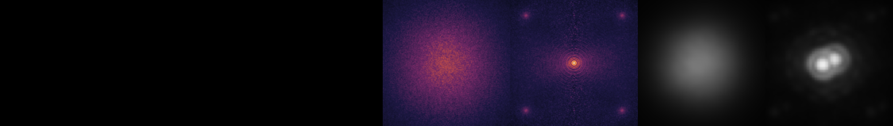

A personal study in adaptive optics
From wavefront to image
I started this simulation to learn adaptive optics by building a loop and examining what it does. It grew into a way to explore sensing, reconstruction and feedback.
I completed an MSc in Astrophysics and now study Photonics. These examples show what I have learned from the model, including where correction breaks down.

Three questions from the simulation
01 · 2 m demonstrationHow does correction change the wavefront and image?Follow the atmosphere, held DM shape and residual on one recorded clock.
02 · 2.2 m investigationWhy did the loop stop correcting?Trace lost measurements and large commands, then compare stronger regularization on the same atmosphere.
03 · 42 m comparisonDoes lower gain help when correction is delayed?Compare whole-window image quality with a smaller late-run excursion.
These are simplified on-axis models, informed by published sources and synthetic assumptions. They have not been calibrated against an operating instrument. Read the methods and evidence →
Selected studies
What the loop taught me
A demonstration, a failure diagnosis and a controller comparison. Each has its own configuration and recorded time interval.
One baseline connects wavefront error, mirror commands and point-source images.
2.2 m · 2 s · same-atmosphere comparisonWhy did the loop stop correcting?The original reconstruction becomes unusable at 0.981 s. Stronger regularization keeps the revised run usable for the recorded two seconds.
42 m · 1 s · three paired atmospheresDoes lower gain help when correction is delayed?Gain 0.3 gives better whole-window image quality among the tested settings. Gain 0.2 reduces the observed late excursion, at an image-quality cost.
The 42 m geometry follows a historical E-ELT reference, not the current 39 m telescope. Assumptions and supporting records →
Methods & evidence
What is in the model?
The recordings follow one on-axis wavefront through a Shack–Hartmann sensor, a reconstructed DM command and a feedback loop. Science images come from propagated residual wavefronts.
Atmosphere and optics
Frozen-flow phase screens translate across the pupil. The 2 m demo uses one screen; the 42 m model combines ten von Kármán layers. The sensor propagates lenslet spots to a detector model. DM shapes and reconstructors differ between configurations.
Atmosphere and implementation details →Timing and image metrics
The displayed residual is measured before that frame’s controller update. Delayed commands affect later exposures. PSFs keep tilt and are not recentered. An averaged PSF is a mean of intensities; its peak Strehl is different from the mean instantaneous Strehl.
Definitions and recording conventions →What the checks establish
Component comparisons and independent numerical calculations test specific equations and implementations. They do not establish instrument performance.
- 2 m sensing and control: a reconstruction of the recorded chain reproduces its trajectory. Independent spot and DM calculations support the observed weak tilt correction. The strict small-amplitude linearity bound failed; the sensor response changes slightly with amplitude.
- 2 m fitting: on a static tilt, the WFS least-squares command leaves more wavefront error than a pupil-optimal fit with the same 13-actuator basis. This is a spatial comparison, not a decomposition of the noisy closed-loop error.
- 42 m reconstruction: pupil-space checks and saved-data consistency checks have restricted scope. Earlier command-space solver criteria failed. Production EE50 is sampling-sensitive; the gain study uses the Fourier-reference EE50.
- Still being examined: PSF/Strehl/EE calculations, photometry and calibration processing. The image metrics remain model outputs, not independently established physical or hardware predictions.
Numerical-check summary and evidence → · 42 m qualifications →
Supporting material
NGC 1705 image replay → Replay the 42 m modelA separate recording that illustrates the larger implementation. Its clock is independent of the gain study.
What changes with a fainter guide star?One two-second matched atmosphere shows a larger late residual at lower flux. Noise and calibration effects are not isolated.
Compare delays at fixed gainThe earlier three-delay comparison supplies six baselines reused in the gain study.
Detector noise and dampingA static calculation of one noise component; no closed-loop improvement is inferred.
Aperture averaging and strokeSecondary diagnostics of two different configurations, with no controlled aperture-only comparison.
Earlier experiments and source recordsSensor, reconstruction and analytical studies, with their original references and qualifications.
Raw wavefront and PSF archives remain local. The public site carries compact records, configuration identities, source hashes and the evidence needed for the selected claims. What can be reproduced from the public files →
Explore the loop
A single 2 m baseline recording. Press Play to follow the wavefront, point-source images and NGC 1705 before and after correction.
Choose a saved run
Each button opens a saved run with one setting changed from the same baseline. The options cannot be combined.
Wavefronts and images
Playback slows down one second of simulated time. It uses saved frames at their original timestamps, with no interpolation.
The dashed curve shows the residual after fitting and removing a plane over the illuminated pupil. This separates tip/tilt from higher-order wavefront error; it does not change the PSFs or galaxy images. Fitted wavefront tilt and measured image-centroid motion are different quantities. The atmosphere curve retains tilt, so comparing it with the dashed curve does not give a like-for-like correction ratio. A smaller value after tilt removal also says nothing about convergence.
NGC 1705 through the simulated PSFs
The observed HST/F814W central region of NGC 1705 seen through the selected case's recorded PSFs.
The galaxy and wavefront controls share one timeline. Playback follows the saved timestamps without adding or interpolating frames.
Image source, processing and limitations
Simple point-source comparison
Synthetic binary observation — analysis-window average; relative flux per numerical cell; no additional science-camera noise.
How the loop changes over time
All recorded frames, including the startup exclusion (shaded). Summaries use the analysis window only. The cursor marks the displayed frame.
Measurement validity and command clipping
Data table and downloads for this case
Baseline analysis-window summary
100 ms block summaries
Model, metric definitions and source records
How the frames and images are defined
Provenance of this case
Scene and observation metadata
Setup · selected 2 m case
Synthetic 2 m model · frame-by-frame SCAO simulation
- Pupil / spatial sampling
- Loading selected-case parameters…
- WFS / science wavelength
- —
- Atmosphere
- —
- Guide source / detector
- —
- Controller / command limit
- —
- Run length and analysis window
- —
What to look for: how the selected setting changes the loop response in this run.
Scope: one atmosphere realization per case, using assumed instrument parameters. These runs do not provide a full instrument error budget or test robustness across seeds and long exposures. I excluded the first 0.2 s before running the analysis; that choice is not a measured settling time.
Full selected-case parameters
The model is not calibrated to a real 2 m AO system. OPD (optical path difference) limits here refer to DM command bounds. Definitions and source files →
The loop reduces wavefront error in this recording, but its low-order model leaves substantial residual tilt. Read the numerical interpretation →
Building the simulation
Here I explain the atmosphere model, the implementation choices that make larger runs possible, and the checks I use to interpret the results.
Combining ten moving layers
The layered model combines independent translating von Kármán screens using the published ESO DRM turbulence weights and wind speeds.
Each layer contributes to the pupil OPD before the sensor measures it. The 42 m recording below uses this ten-layer model.
This model propagates one on-axis wavefront. Layer heights are recorded, but off-axis propagation and tomography are not included. The 2 m experiment above uses a single screen.
Detailed atmosphere records →Ten-layer profile used in the 42 m recording
r₀ = 0.13 m at 500 nm · L₀ = 25 m
Bar length shows normalized turbulence weight; height is labelled, not drawn to scale.
Structure-function check and its scope
Saved 256-screen comparison with the von Kármán reference. The separate single-layer / ten-layer loop comparison also changes r₀, so it does not isolate the effect of layering.
Keeping larger runs manageable
The large-aperture path combines local lenslet propagation, sparse DM operators and iterative reconstruction. Science images are accumulated from instantaneous intensities.
The replay follows one run from the atmospheric wavefront to the corrected images.
The pupil follows the historical 42 m E-ELT design reference. The current ESO ELT is 39 m; this simulation uses a simplified instrument model.
Open the recorded 42 m experiment →- Local lenslet calculationsPropagate detector spots in bounded batches.
- Sparse response and DM operatorsRetain the local couplings used by calibration and reconstruction.
- Iterative reconstructionSolve for commands without dense global inversion.
- Streaming image accumulationAverage intensities while retaining selected full-grid PSFs for replay.
What I have checked so far
Sensor response
Calibrated tilt response and centroid precision in tutorial configurations.
Sensor checks →Independent implementations
Comparison of the native and HCIPy implementations on one small test configuration.
Backend comparison →Numerical sampling
Sampling studies for selected configurations and observables. Other configurations still need their own checks.
Sampling records →The 42 m replay includes source records and numerical consistency checks. It is still one realization: robustness, long-run stationarity and agreement with real instrument data remain open.
Replay a larger AO loop
This run uses a ten-layer atmosphere and a simplified 42 m telescope model. Step through the saved frames to follow the wavefront, the deformable-mirror correction and the resulting images. The simulation was run offline; playback adds no frames or noise.
500 frames at 500 Hz · 1 s simulated time · 126 snapshots (every fourth frame and the final frame). Averages use frames 100–499; metrics are measured before each control update.
Simplified annular pupil based on the historical 42 m E-ELT reference geometry. The current ELT is 39 m; this run does not predict an ELT instrument’s performance.
Setup and limitations ↓ · A separate detector-noise calculation ↓ · Fainter guide star, 2 s ↓ · Controller delay ↓ · Integrator gain and delay ↓ · Full configuration and checks →
Wavefronts and images
- Recorded frame
- —
- Simulated time
- —
- Window analysis = frames 100–499
- —
- Residual RMS pre-update · this frame
- —
- Atmosphere RMS before correction · this frame
- —
- Peak Strehl uncorrected → corrected
- —
Same recorded frame, same scales: left PSF without correction (same atmosphere, zero DM), right with AO correction.
Speed changes only how fast saved frames are shown; it is not a simulation parameter. Keyboard, with a 42 m control focused: ← and → step, Home and End jump to the first and final frame, K plays or pauses.
Wavefront maps and numerical RMS always show the selected frame. Mean-intensity images use every frame in 0.2–1.0 s, not just the replay snapshots. The 42 m timeline is independent of the 2 m controls.
How the loop changes over time
All 500 frames are shown. The shaded first 0.2 s is excluded from the averages, as planned before the run; it is not a measured settling time.
Analysis window · 0.8 s · frames 100–499 · 400 equal weights
- Mean instantaneous atmosphere RMS
- —
- Mean instantaneous pre-update residual RMS
- —
- Peak Strehl of mean AO intensity PSF
- —
At 2.2 µm, with 10⁵ detected e⁻ per full subaperture per 2 ms. These averages describe one seed and one 0.8 s window; robustness across conditions and long-run stability have not been established.
Setup and limitations · 42 m
Historical pupil geometry, published atmosphere inputs and assumed hardware parameters
- 42 m annular pupil · 28% obstruction
- 10 layers · r₀ 0.13 m at 500 nm
- Science PSF at 2.2 µm
- WFS: 10⁵ detected e⁻ per full subaperture per 2 ms
- Synthetic CCD · detector noise on
- One seed · 500 steps · 1 s simulated time
This is one configuration under an assumed high-flux guide-source setting. The guide flux is not tied to a measured star magnitude and is independent of the photographed binary.
- Sampling / WFS wavelength
- 1008² pupil samples; 84 × 84 lenslet grid; 85 × 85 DM grid; 700 nm WFS reference.
- Controller / command limit
- 500 Hz; gain 0.3; leak 0; two queued frames (4 ms); ±100 µm OPD, an assumed high-headroom bound.
- Analysis window
- Seed 1; 0–1 s recorded; [0.2, 1.0) s analysis. One realization, no confidence interval over realizations.
- Parameter sources
- 42 m historical DRM geometry and ten-layer profile; synthetic CCD, DM and photon-budget assumptions. L₀ = 25 m; all layer winds along +x.
What this run shows: on-axis correction and DM command demand in this model. The sections below examine the wavefront over a smaller patch and check command clipping.
Scope: this is not a prediction for the current 39 m ELT. The 2 m and 42 m runs differ in more than aperture, and one second cannot establish long-run stability. The 0.2 s startup exclusion is an analysis choice.
The pupil omits segment gaps and spiders. Detector and DM parameters are assumed, including a ±100 µm OPD command bound; the model does not include a complete instrument error budget. The 2 m and 42 m runs also use different science wavelengths. DM stroke, saturation and ELT M4 context → · Full configuration and checks →
Observed binary with additional simulated blur
An HST F775W image convolved separately with the uncorrected and corrected simulation PSFs. The original HST resolution and noise remain. This illustrates additional blur; it does not predict a 42 m K-band observation or measure its resolving power.
2MASS J0746425+200032 AB · HST/ACS HRC F775W · 2002-10-21. All three panels share one angular scale and one fixed brightness mapping.
Both simulated images are generated from the observed template; the right-hand panel is not a restoration of the middle panel. Credit: NASA/ESA Hubble Space Telescope, ACS/HRC program 9451; MAST/STScI. Scientific source and image preparation →
Why does the 42 m atmosphere look steadier?
The full-pupil RMS changes little while the wavefront keeps moving. A fixed 2 m patch from the 42 m recording reveals local changes comparable to the independent 2 m simulation.
Comparing the whole-pupil RMS
The 2 m recording has much larger swings in whole-pupil input RMS. Across the full one-second records, the largest larger/smaller RMS ratios over 40 ms are 1.51× for 2 m and 1.009× for 42 m; over 100 ms they are 2.15× and 1.021×. These are the largest observed changes at each physical time separation, not typical changes or several-fold jumps in a few computed frames.
Both recordings last one second.
The 2 m run has 1000 frames at 1 kHz; the 42 m run has 500 at 500 Hz. Both viewers show 126 saved snapshots. The physical duration is the same.
In frozen flow, a pattern moves v Δt / D aperture diameters. At the same 10 m/s, one second is five 2 m diameters but only 0.24 of a 42 m diameter. This describes motion across the picture, not the local atmospheric coherence time.
The original displays use different scales.
The 2 m maps use ±1.95 µm OPD; the 42 m maps use ±6.7 µm and 4 × 4 spatial averaging for display. Their apparent color changes are not directly comparable.
The 42 m wavefront is evolving: between 0.200 and 0.700 s, the full-pupil difference RMS is about 1851 nm even though each frame’s overall RMS is similar.
Comparing the same 2 m footprint
Take one fixed circular patch centered at (10, 0) m inside the unobstructed 42 m pupil. Compare it with the 2 m baseline at matching physical times, on the same 52 × 52 grid and one ±2500 nm OPD color scale. Remove each local pupil mean, retain tilt, and leave amplitudes unchanged.
Postprocessing of existing full-precision recordings only. No new atmosphere, AO trajectory or temporal interpolation. The 42 m patch uses bilinear spatial sampling onto the 2 m grid.
Where is the patch in the 42 m pupil?
Watch the synchronized wavefronts and 8 ms differences
Top: independent 2 m baseline. Bottom: the 42 m patch. Left: the current wavefront. Right: its change over the next 8 ms. The same ±2500 nm scale covers every panel.
The local fluctuations are comparable
Across 400 matching times from 0.200 to 0.998 s, the patch’s relative RMS fluctuation rises to 29.3%, close to the independent 2 m baseline’s 25.6%. The full 42 m pupil fluctuates by only 1.4%. The crop does not show uniformly slower local evolution.
| Quantity | 2 m baseline | 42 m: 2 m patch |
|---|---|---|
| Loading the recorded comparison statistics… | ||
Difference RMS is √⟨[W(t + Δt) − W(t)]²⟩ over the common pupil and every available time pair. There are 396, 350 and 150 pairs at 8, 100 and 500 ms. The figures above show one pair starting at 0.200 s, so their RMS values can differ from these whole-window statistics.
What this suggests about DM tracking and Strehl
The explanation needs both atmosphere and control conditions. The 2 m loop clips commands at its ±1 µm OPD limit, while the 42 m loop stays within its ±100 µm limit. Stroke affects the comparison, but the existing data do not establish it as the main cause of steadier Strehl. The crop experiment helps interpret the input's apparent steadiness; it does not isolate the cause of the corrected image's stability. Read the saturation check below →
One possible explanation to test: if two loops have comparable response and maintain a similar, approximately constant residual-to-input RMS ratio, smaller fluctuations in input RMS should produce smaller fluctuations in residual RMS. Inferring steadier Strehl additionally requires comparable residual phase variance and consistent science-image definitions. These recordings do not hold those conditions fixed.
Are the 2 m and 42 m control parameters similar?
| Parameter | 2 m | 42 m |
|---|---|---|
| r₀ at 500 nm / outer scale | 0.1263 m / 25 m | 0.1300 m / 25 m |
| Pupil sample spacing | 0.0392 m | 0.0417 m |
| Nominal lenslet pitch / grid | 0.4 m / 5 × 5 | 0.5 m / 84 × 84 |
| Controller family | Leaky integrator | Same family, zero leak |
| Loop rate / gain / leak per update | 1000 Hz / 0.2 / 0.02 | 500 Hz / 0.3 / 0 |
| Queued delay / first WFS-visible effect | 2 frames = 2 ms / 3 ms | 2 frames = 4 ms / 6 ms |
| DM grid / influence model | 5 × 5 / Gaussian | 85 × 85 / linear spline |
| Symmetric DM OPD command limit | ±1 µm | ±100 µm |
| Reconstruction | TSVD | Sparse LSMR + Tikhonov |
| Detector / guide-source convention | Synthetic EMCCD / AB magnitude 7 | Synthetic CCD / 10⁵ e⁻ per full subaperture per frame |
| Science wavelength shown | 1.65 µm | 2.2 µm |
Both use noisy detector-level sensing and a 700 nm WFS reference, but the detector, spectral sampling and source conventions differ. The 42 m layers also have different wind speeds from the single 10 m/s 2 m layer. Equal latency in frames does not mean equal latency in seconds; gain alone does not determine closed-loop bandwidth.
As a descriptive check over the same 400 times, the mean per-frame residual/input OPD RMS ratio is 0.687 for 2 m and 0.119 for 42 m (temporal standard deviations 0.118 and 0.0028). These ratios combine fitting, temporal, sensing, reconstruction and stroke effects; they are not an isolated controller-efficiency measurement. They do show that an equal suppression ratio is an assumption, not a measured property of these two runs. Exact values, configuration hashes and definitions are in the downloadable control comparison.
A larger aperture covers more spatial structure at once. Its aggregate wavefront RMS can remain steady even as individual regions change. The same-footprint experiment supports this interpretation of the two recordings; it does not show that local turbulence slows down as the telescope gets larger.
The DM must keep tracking changes at the subaperture and actuator scales. Its performance depends on those scales, wind, loop rate, delay, reconstruction and stroke. A longer whole-aperture crossing time alone does not make that tracking easier.
A stable Strehl can accompany a continuously changing wavefront if the closed loop maintains a stable residual phase variance. Near high Strehl, the Maréchal approximation S ≈ exp(−σ²φ,res) describes this connection for consistent wavelength, pupil and tilt/peak conventions. The site’s reported Strehl values come from propagated PSFs, not this approximation.
The crop experiment examines the input atmosphere; it does not isolate the cause of corrected Strehl stability. The two simulations also differ in layer winds, DM/control settings and science wavelength. One patch and one realization per model support a descriptive comparison, not model equivalence, statistical convergence or instrument validation.
Sampling sensitivity, definitions and downloads
The shared support contains 2032 uniformly weighted points over a 2 m circle. The 2 m spacing is 2/51 m; the original 42 m spacing is 42/1007 m. Local piston is removed independently at each time; tilt remains. No wavefront registration or amplitude normalization is applied.
Bilinear sampling mildly filters the 42 m patch. Nearest-neighbor sampling changes its mean RMS from 381.5 to 384.1 nm and its 8 ms difference RMS from 136.6 to 142.7 nm (about 4.2%). It does not reverse the comparison. This sensitivity check is not an uncertainty bound.
The full 2 m archive hash, all 400 used 42 m frame hashes and the archived time arrays were checked. The downloads include source hashes, methods, numerical arrays and a script for repeating the postprocessing. Hash checks connect the analysis to the saved data; they do not test the physical model.
For the frozen-flow model context, see Por et al. (2018), §4.1. The experiment and figures here were calculated directly from the stored wavefronts.
How much does the DM stroke limit matter?
The 2 m recording reaches its command limit; the 42 m recording does not. Stroke affects the comparison, but these data cannot show that it is the main reason the 42 m Strehl is steadier. During 0.200–0.518 s, the 2 m mirror continuously holds commands that were not clipped, yet Strehl still ranges from 0.380 to 0.722.
Why are the limits 100× apart?
The 2 m profile inherits ±1 µm OPD from a synthetic engineering preset. The 42 m profile deliberately uses ±100 µm OPD as a finite stand-in for unlimited stroke. That approximation requires the requested commands to stay within the bound. I chose these limits for different modelling purposes; they are not a hardware scaling rule.
How I checked clipping
The saved requested and applied actuator commands were compared directly, alongside the existing residual RMS and propagated-PSF Strehl records. Saturation means a requested command exceeds the configured positive or negative limit. No atmosphere, calibration, control loop or PSF was rerun.
| Quantity | 2 m | 42 m |
|---|---|---|
| Loading the saved saturation statistics… | ||
“Frames with clipping” counts updates with any clipped actuator. “Mean clipped actuator fraction” averages across all recorded actuator channels and updates; the two percentages have different denominators. Across the entire 1 s, including startup, 2 m clips in 306/1000 updates; 42 m clips in 0/500. The maximum requested magnitudes over that whole second are 1.128 and 6.918 µm OPD respectively.
The 42 m requests stay below 7 µm OPD, far inside the ±100 µm bound. Unused headroom does not itself strengthen correction in this model. The 2 m loop also fluctuates during sustained unsaturated intervals, and the two configurations differ in sensing, reconstruction, DM influence functions, gain, leak, delays and wavelength. Clipping is present in the 2 m run, but these records cannot tell us how much it contributes to the difference in Strehl variability.
Timing, descriptive associations and the limits of an offline comparison
There are 174 clipped issued updates in the 2 m analysis window, but 173 observed frames holding a clipped command: the final update has no following saved exposure. Grouped by held command, mean Strehl is 0.601 during clipped intervals and 0.569 during unclipped intervals. These are different atmospheric states, not matched comparisons; they do not imply clipping improves Strehl.
The controller carries the actually applied command into its next update. Its saved requests therefore already reflect earlier clipping. Removing clipping from those saved commands cannot recover a larger-stroke closed-loop trajectory. On the original 42 m trajectory, 46.73% of actuator-time requests exceed 1 µm and none exceed 10 µm during the analysis window; these are demand counts, not simulated outcomes for alternative limits.
One second and one realization per configuration do not identify the dominant physical cause or establish long-term stability. The 0.2 s startup exclusion is not a convergence result.
What does real ELT M4 hardware tell us?
ESO's 2022 ELT coordination and control paper, pp. 1–2 provides the following context. Its M4 is part of the 39 m ELT; this recording uses historical 42 m geometry and a synthetic DM model.
| Parameter | ELT / M4 in the ESO paper | 42 m recording |
|---|---|---|
| Telescope primary aperture | 39 m | 42 m historical geometry |
| M4 degrees of freedom / model command channels | 5352 degrees of freedom | 5873 recorded channels on an 85 × 85 layout; 5328 are nonzero in this record |
| On-sky / simulated loop rate | Up to 1 kHz | 500 Hz |
| Stroke | 100 µm actuator stroke, as stated in the paper | Explicit symmetric command bound: ±100 µm OPD |
| Stroke management | Slowly accumulating modes are offloaded to other telescope mirrors and axes | A single modeled DM with command clipping |
The two “100 µm” values could correspond, but their definitions must first match. If the hardware value is a total mechanical travel of 100 µm, with a centered operating point and normal-incidence reflection, the conversion is:
100 µm mechanical total travel → ±50 µm mirror displacement → ±100 µm OPD.
That conditional conversion matches the model numerically. The cited passage does not specify all those conventions, and it does not establish the usable symmetric range of every model command coefficient. Optical versus mechanical stroke, total versus one-sided travel, bias and static correction, spatial coupling and incidence angle all matter. For normal displacement h at incidence angle θ, the geometric optical-path change is 2h cos θ; at normal incidence it is 2h. The model commands are already OPD-equivalent.
The ±100 µm assumption is therefore compatible with a large-mirror stroke scale, but it is not a calibrated ELT M4 hardware specification. The demonstrated absence of saturation applies to this recorded model and bound.
Methods, source records and downloads
The raw histories match their archived SHA-256 records. Saturation was independently reconstructed from the requested commands, applied commands were checked against clipping, and published timestamps and residual RMS were checked against the histories. The downloads contain the original analysis data and figures.
For the distinction between limited stroke and controller state, see Nagashima, Kim and Agrawal, actuator limitations and anti-windup. For controlled finite-stroke comparisons in a different ELT AO architecture, see Basden et al. (2013), §§2.3 and 3.3. Their numerical performance penalties are not transferred to this recording.
Why did the loop stop correcting?
I built this configuration using published Robo-AO-2 information as a starting point. The original version loses usable reconstruction at 0.9813 s. After increasing regularization, the loop stays usable through the same two-second atmosphere sequence. Both runs are shown below.
What changed: stronger rejection of weakly sensed reconstruction modes. The DM stroke, atmosphere, photons, loop gain and timing are unchanged between the two 2.2 m runs. The added recovery safeguard was not needed in the revised run.
The setup combines published hardware information, atmosphere parameters from the literature and my own modelling assumptions. It has not been calibrated against Robo-AO-2 telemetry or measured PSFs.
The results load when this section comes into view.
Setup and limitations · 2.2 m NGS
Published hardware information, literature atmosphere parameters and modelling assumptions
- Hardware targets / model sampling
- UH 2.2 m scale; 16 × 16 lenslets; 17 actuators across the illuminated pupil. Numerical model: 256² samples and 197 command channels, not a measured 492-channel map.
- Atmosphere / guide source
- 11 layers including slow dome seeing; r₀ = 0.113 m at 500 nm; L₀ = 25 m. AB 7 flat-fν guide photometry is a local assumption.
- Wavelengths / sensing
- 750 nm WFS reference; displayed science PSFs at 1.65 µm. Noisy detector-level sensing; camera electronics, pupil and field-stop treatment remain approximate.
- Controller / command limit
- 750 Hz; gain 0.4; leak 0; two queued frames (2.667 ms); ±3.5 µm OPD. Symmetric stroke assumes midpoint bias, normal incidence and no reserved static stroke.
- Change between the paired runs
- TSVD cutoff 0.001 → 0.05; rejection decay added but never activated in v2. Both settings are local engineering choices.
- Run length and analysis window
- One paired realization; 1500 frames per run over 2 s. All input atmosphere maps and calibration arrays match. Analysis starts at 0.2 s.
Result: stronger regularization prevents the observed reconstruction failure on the same input sequence.
Still to test: robustness over longer runs and different conditions, and agreement with real instrument data. The recovery safeguard did not activate in v2. The model also omits a separate tip-tilt mirror.
All 131 parameter notes → · Inspect the control diagnosis → · Westerlund 2 F162M image experiment →
Replay the original and revised runs
Shared input on the left; original v1 in the middle; revised v2 on the right. Wavefronts, PSFs, the Westerlund 2 F162M image experiment, readouts and the black chart cursor advance together. The red dashed line marks frame 736 · 0.981333 s, the first rejected v1 reconstruction.
Saved replay loads when this panel is visible.
Shared input
Original · v1
Revised · v2
One fixed OPD scale for all three panels and every frame; no displayed value is clipped. Piston removed for map display only; tilt retained. Dark pixels lie outside the pupil.
Westerlund 2 through the recorded PSFs
The accepted 4.109″ field, at the same angular scale and brightness transfer in every panel. The single-band JWST observation near 1.627 µm is convolved with the existing 1.65 µm PSFs. Images, the wavefront replay and Strehl cursor share one recorded clock. Play begins the full record; the opening view shows the final comparison.
MP4 download loads with this replay.
Fixed reference
No correction
Original · v1
Revised · v2
First rejection is a time marker, not an instantaneous image collapse. The 0.980000 s and 0.981333 s images are only 1.333 ms apart. Strehl is the saved point-source metric; failed v1 frames remain visible.
Saturation and band approximation: the crop avoids mapped saturated stellar cores, but bright stars outside it can still affect image edges. F162M is approximated by the existing 1.65 µm monochromatic PSFs. JWST’s own PSF, diffraction structure and noise remain. No new simulation, band integration or exposure integration is performed.
Source: NASA/ESA/CSA JWST NIRCam, program 3523 · EWOCS, calibrated public MAST product. Data policy. Modified by resampling, PSF convolution and a shared display stretch.
Locate the selected field and inspect the source
The 30″ context shows the selected 4.109″ field in white and mapped saturation flags in cyan. The native cutout is shown alongside it. This is an outer field in the Westerlund 2 observation, not a panorama of the dense cluster core.
Download animation · source · saturation checks and assumptions
Source: jw03523-o005_t001_nircam_f150w2-f162m_i2d.fits · SCI in MJy/sr · pipeline 3.0.0 · CRDS jwst_1584.pmap. F150W2 is the blocking filter; the transmitted band is F162M. Its 1.627 µm pivot differs from the model by about 1.4%; its 0.168 µm bandwidth is approximated by one existing monochromatic PSF.
The exact approved source context is reused. Linear pixel-area averaging and full 768 × 768 unit-flux PSF convolution retain tilt and physical angular scale. The kernel uses real surrounding data. A fixed asinh stretch (0–80 MJy/sr, softening 2 MJy/sr) is applied afterward. Display tails clip; linear numerical samples remain available.
Invalid samples in the wider context use nearest-valid fills. Source noise, calibration residuals and diffraction structure remain. A single on-axis PSF is assumed over the field; no deconvolution, anisoplanatism or additional science-camera noise is added. The ideal reference adds the model’s zero-aberration pupil PSF to the already observed image. These views do not validate real Robo-AO-2 performance or provide new stellar photometry.
The original draft, all parameter assumptions and diagnostic records remain below.
Filter definitions · JWST PSFs and resampling · JWST data-quality flags.
Replay sampling, PSF derivation and downloads
PSFs were rendered offline from existing raw OPD maps using the original centered FFT convention, binary pupil, threefold padding and unit total flux. All 15 archived original/revised PSF snapshots match exactly; sampled Strehl values agree to within 4.5 × 10⁻¹⁶. The browser only replays the exported images. No atmosphere, detector noise or control trajectory was rerun.
Maps retain all 256 × 256 pupil samples. Cropped PSFs are enlarged with nearest-neighbour sampling for display; the full PSF determines Strehl. No temporal interpolation or per-frame contrast rescaling is applied. Changing speed only changes presentation time. Playback pauses when the tab is hidden and does not skip frames while loading. The original draft and all assumptions remain below.
Numeric comparison and the separate 2 m baseline
The baseline covers one second. The longer window compares only the two 2.2 m runs.
| Recorded configuration | Frames | Mean Strehl | Temporal SD | CV | Frames with new clipping | Frames with DM at boundary | Unusable reconstruction |
|---|
SD is the population standard deviation over time; CV = SD / mean. These are fluctuations of this recording, not error bars on a population mean. The first 0.2 s is excluded as predeclared; rejected frames after that remain in the statistics.
Saturation has two meanings: new clipping counts a command request beyond the limit; boundary occupancy also counts a command held at the limit. Each table percentage counts frames with at least one affected actuator. The plot below instead shows the fraction of actuators in each frame.
Tracing the loss of lock
- Some lenslet measurements fail the quality checks Peak-SNR rejection appears before window-clipping and centroid-uncertainty failures spread. Selected deterministic checks reproduce the saved effective row counts; detector pixel saturation is absent in those states.
- The remaining measurements leave some modes poorly constrained The full calibration is reasonably conditioned, but removing rows creates weak response modes. The draft's TSVD cutoff of 0.001 still retains modes that amplify small measurement errors into large DM increments.
- Large command increments worsen measurement loss At frame 732 (0.976 s), the reconstructed actuator-vector increment norm reaches 45.82 µm OPD. Filtering that saved vector at 0.05 removes 98.43% of its squared norm. This vector norm is not the excursion of one actuator.
- Reconstruction stops and the mirror holds the last correction At frame 736 (0.981333 s), only 278 of 374 calibrated rows remain: 74.33%, below the unchanged 75% gate. Queued commands continue through frame 737; zero leak then holds the applied shape, with eight actuators at their limit.
At three saved times after rejection, a fixed-state check with the same atmosphere and a flat DM restores all calibrated measurement rows. This suggests that the held correction sustains the failure at those times. The initial noise event is still unresolved, and this diagnosis applies to this case.
Few new clipping events after the failure do not mean the loop became stable: the DM stopped updating. Persistent boundary occupancy and reconstruction validity reveal the difference.
Follow the measurement and control signals
Telemetry contains every frame; images contain a saved subset. Replay changes move this cursor to the exact same frame. Inspecting an unsaved telemetry frame pauses the replay and leaves its image timestamp clearly labelled.
Inspect four recorded signals on the same time axis. Orange: original v1; green: revised v2. The red dashed marker is frame 736 · 0.981333 s, v1’s first rejected reconstruction. Optical degradation begins earlier.
Saved control telemetry loads when this panel is visible.
| Signal | Original v1 | Revised v2 |
|---|
At frame 732 (0.976 s), v1’s increment-vector norm is 45.82 µm OPD. Frame 736 has only 278/374 valid rows (74.33%). Queued updates continue through frame 737; from exposure 738, eight actuators remain at their boundary. V2 stays usable with no boundary occupancy in this recording.
Frame timing, definitions and downloadable telemetry
Wavefront, measurement validity and Strehl refer to exposure k. The archived applied DM command is recorded after update k and is held for exposure k+1, so the occupancy curve uses applied[k−1]; frame 0 starts flat. The existing comparison table above counts post-update applied states. The CSV keeps both the aligned held occupancy and the unshifted new-clipping fraction.
A rejected reconstruction is stored with a zero increment sentinel. Here it is a null value and a plotted gap. All 1500 native samples per run are retained. The curves describe this realization; the previously recorded modal and fixed-state checks support the diagnosis, while the initiating noise event remains unresolved.
What I changed, and what this run tells us
| Setting | Original draft · v1 | Revision · v2 | Basis for the setting |
|---|---|---|---|
| TSVD relative cutoff | 0.001 | 0.05 | Chosen for this simulation, not taken from an instrument specification. Limits retained relative inverse sensitivity to 20 instead of 1000. All 197 full-support calibration modes remain. |
| Consecutive-rejection recovery | None | After 3 rejected frames, decay requested commands by 5% on each further rejected frame | A recovery rule for this model. The two-frame queue drains first. Fallback reconstruction and gain scheduling remain disabled. |
| Physical model and normal controller | 2.2 m; ±3.5 µm OPD; gain 0.4; zero leak; two queued frames; 750 Hz; same atmosphere, optics and camera settings | Unchanged between v1 and v2. Original classifications and qualifications remain in the field ledger. | |
The paired comparison uses the same seed and realization: all 1500 atmospheric maps match bitwise and the calibration arrays are identical. All 1500 revised frames reconstruct, with zero command clipping and zero boundary occupancy. No recovery decay or fallback was activated. The preventive cutoff change accounts for the improvement on this input; recovery capability was checked separately.
The published NGS simulation uses regularized zonal least squares. This model retains a TSVD approximation. The rationale for suppressing weak inverse modes follows the SVD calibration discussion; neither source supplies the chosen 0.05 cutoff or recovery settings.
Hardware references, model gaps and 131 parameter notes
The original preparation draft is preserved. It still says “not run / unregistered” because it predates these runs. The configurations used for v1 and v2 are available below. The revision changes only the cutoff and recovery policy; the other assumptions retain their original classifications.
Hardware targets include the UH 2.2 m aperture, a 16 × 16 NGS lenslet layout and a BMC DM492-3.5 mirror with 17 actuators across the illuminated pupil. The model uses 197 retained actuator centres, not a measured 492-channel hardware map. Its symmetric ±3.5 µm OPD bound assumes normal incidence, midpoint bias and no reserved static-correction stroke.
Several parts of the model still need work: a separate tip-tilt mirror is omitted; the pupil and influence functions are approximate; NGS binning, field-stop propagation, actual controller timing and detector electronics are not fully calibrated. AB 7 flat-fν photometry, the sky convention, numerical sampling and some camera values are local assumptions. The slowly evolving dome layer makes two seconds insufficient to establish long-term stability.
Each parameter is labelled by its basis: published hardware or operating modes, simulation assumptions from the literature, derived values, local assumptions or numerical choices. The table keeps the original notes and sources; the revised settings have a separate download.
| Field | Original 2 m | 2.2 m draft | Classification / sources | Notes and limitations |
|---|
Data, run history and downloads
This comparison uses the saved 2 m baseline and the two completed 2.2 m runs. The comparison with 2 m is descriptive: aperture, atmosphere, spatial sampling, camera and controller all differ. It cannot identify the causal effect of DM stroke.
The original run also encountered a separate telemetry-export issue: a negative background-subtracted SNR diagnostic was clipped to zero for export, while signed quality calculations and validity gates remained unchanged. A replay reproduced all 745 prior frames exactly before completing the same realization. A later one-ULP stroke-limit postcheck was corrected using saved data. These execution corrections are distinct from the loss-of-lock mechanism above.
The downloads preserve source hashes, all field assumptions, executed configurations, diagnostic checks and per-frame scalar values. Full-resolution raw wavefront stacks remain in the local archive. The figures describe one two-second realization. Longer runs, sampling studies and comparison with hardware data remain to be done.
Earlier experiments
These earlier experiments cover sensor behaviour, reconstruction, larger models and a separate analytical AO study. Open a topic for the results, sources and unresolved questions.
42 m run · configuration, checks and reproducibility
Profile det_ccd_42m_r3band_derived@1; 1008² pupil samples; 84 × 84 lenslet grid; 85 × 85 DM grid; seed 1; 500 Hz simulated loop rate; gain 0.3; leak 0; two queued latency frames; ±100 µm OPD command limit. Declared WFS flux: 10⁵ detected electrons per full subaperture per 2 ms frame. The synthetic CCD preset is an assumed engineering model, not measured ESO hardware. Zero saturation in this run refers to the configured ±100 µm OPD command limit; it does not establish feasibility for a real adaptive mirror. All ten frozen-flow layers move along +x at their specified speeds; layer heights are not used for tomography.
500 full-precision atmosphere/residual map pairs, 126 full-grid PSF pairs, all frame metrics and 400-frame intensity means are retained locally. Mean intensities are accumulated without recentering; the wavefront is never averaged before propagation.
The environment's pinned package versions match the project lock, with additional packages disclosed. Frozen producer sources and content hashes are retained. The public plan omits host details; the original plan and its hash remain in the local archive.
This single realization does not establish robustness, stationarity, sampling convergence for this detector-level profile, or hardware performance. The historical 42 m results in the appendix are separate runs with their own windows.
Historical 42 m DRM geometry · Current 39 m ELT
Configuration:
42 m illustration · scientific source and image preparation
NASA/ESA Hubble Space Telescope, ACS/HRC program 9451; MAST/STScI calibrated product j6kt02020_drz.fits, F775W, 440 s total exposure, 0.025″ pixels. All four input exposures have no saturation flags in the inspected 31 × 31 pixel region around the binary.
A fixed 161 × 161 pixel crop is background-subtracted using an outer annulus and resampled by exact pixel-area overlap. Signed pixel values are retained, and the template is normalized once. There is no deconvolution, component replacement, separation adjustment or per-frame brightness rescaling.
The complete recorded PSF is applied by linear convolution with zero extension. The original HST PSF and noise remain. One on-axis PSF is assumed across this compact source; component-dependent anisoplanatism and additional science-camera noise are not included. Image axes retain the source orientation, without a north-up claim. Negative values are clipped only for display.
Full methods, observable definitions and open questions
Model families on this site
- Native time-domain SCAO (the 2 m experiment, R1–R5 and the large-aperture convergence studies of R8): a frame-by-frame closed loop with a Shack-Hartmann sensor, a deformable mirror, a TSVD or sparse reconstructor and a leaky-integrator controller with queued delay. Detector-level profiles add a detector model (photon, read and sky noise, calibration products).
- HCIPy time-domain components (R7): an independent backend compared with the native one on a small test configuration.
- Analytical MCAO adapter (R6 and the analytical-study checks of R8): P3 sampled correction-band PSD plus a continuous fitting-tail completion propagated by MASTSEL. It is a separate study, not an extension of the native loop.
Wavelengths, residual conventions, noise settings, profiles, sampling windows and budgets differ between these families and between studies; the site never merges them into one performance comparison.
The 2 m experiment
Observable definitions
- Residual RMS: pupil RMS of the pre-update residual (what the WFS measured) after removing the pupil mean, in nm OPD. Mean per-frame RMS and the root of the mean square are reported separately.
- Residual RMS after tip/tilt removal: for each frame, a plane a + b x + c y is fitted by equal-weight least squares over the illuminated pupil samples to the same pre-update residual map, in the pupil's own coordinates; the diagnostic is the RMS of the residual minus that plane, in nm OPD (float64, pupil exterior excluded). It is computed from the saved maps after the run and changes no image. The atmosphere RMS and the total residual RMS keep their tilt.
- Peak Strehl: peak angular surface brightness of an image over that of the zero-OPD image of the same propagator and grid. The mean of instantaneous Strehl and the Strehl of the averaged image are different quantities and are labelled as such.
- Averaged image: the equal-weight mean of every instantaneous intensity in the analysis window: frames 200–999 (800 frames) in the 2 m replay, and frames 100–499 (400 frames) in the 42 m replay. Startup exclusion is a declared choice, not a convergence result. The averaged OPD is never propagated; tilt is kept and nothing is recentred.
- Validity: measured fractions of valid measurement rows and sub-apertures, and whether the reconstructor returned an estimate. No lock classifier is claimed.
How to read the result labels
Numerical limits and open questions
Reproducibility and identity
Local preview
The site is static and needs an HTTP server; opening index.html from the file system is not supported. From the repository root run python3 -m http.server 8000 --directory site and open http://localhost:8000/. All assets are bundled; the page makes no external requests. Source links in the appendix open the corresponding GitHub files at their recorded commits.
The page's code lives in a directory named after its content (code-<build>/) and the dataset entry records that build, so a browser cannot combine a cached older script with newer data: a page whose code does not match the entry says so and asks for a reload.
How these experiments relate to the earlier 42 m results
- The replay above is one recorded 1 s run. Its images and frames are not frames of the later experiments, which have their own durations and windows.
- C1 keeps its restricted conclusion: at 10⁵ e⁻, a static prediction found the detector-noise benefit of the tested alternative damping below the threshold for a new experiment, so the production damping stays α 0.001. None of these later experiments compares dampings or shows that the damping must change, and the broader question of whether the 42 m reconstruction is adequately regularized remains open.
- Earlier static solver checks keep their recorded outcomes. A full-command accuracy check of the production solver against a reference solution (T1c) and the one-shot cost of a much larger damping (T4) failed, so that static stage remained inconclusive (outcome I). A later dense-fill check (N13) remained unqualified; its prospectively amended version (N14) passed its pupil-space criteria while the original command-space criterion still fails.
- The production EE50 remains a secondary, sampling-sensitive diagnostic; the Fourier-reference EE50 is the primary image width.
- The 42 m profile is synthetic, derived from the historical 42 m design ledger. It is not a prediction for current 39 m ELT hardware.
- The earlier failed or incomplete faint 1,000-frame attempts remain part of the record; the completed third attempt and the bright control are later, separate evidence.
Source code and reference repositories
Shack-Hartmann AO Simulation — this project's Python package, bundled configurations and usage examples. The 2 m, 2.2 m and 42 m time-domain recordings use the project's native implementation.
- HCIPy — optional optical backend and independent component comparison; see the R7 study.
- TIPTOP — upstream ecosystem for the separate analytical AO performance study in the appendix.
- P3 — sampled correction-band phase PSD used by that analytical adapter.
- MASTSEL — PSD-to-PSF propagation used by that analytical adapter.
The analytical adapter adds its own fitting-tail completion; its outputs are not unmodified TIPTOP predictions. Each study lists its software versions, source revisions, scientific references and limitations. Using these packages does not by itself validate the instrument model.
Would stronger damping reduce detector noise?
In this separate calculation (C1), I compared the damping used in the replay with one alternative at the same assumed flux (10⁵ detected e⁻ per full subaperture per frame). It predicts the detector-noise contribution to reconstructed pupil wavefront RMS.
The alternative changed that prediction from — to —. The difference is below the threshold I set for a new closed-loop experiment, so I kept α = 0.001. This calculation produced no images; the pictures above all come from the original replay.
The 0.0042 nm difference concerns this predicted noise component alone. It is neither a reduction in total residual RMS nor the RMS difference of paired runs, and it does not predict the outcome of a full closed-loop comparison.
C1 model, numerical checks and source records
| Quantity | Replay setting α 0.001 | Alternative α 0.0025 |
|---|
Only the alternative α 0.0025 was carried through the full noise calculation; total closed-loop behaviour and other operating conditions are unmeasured.
Numerical agreement between independent calculations (about 10⁻¹³) is not a statistical interval: this was one deterministic calculation for one configuration.
New closed-loop runs · 2 s each · one atmospheric realization (r2)
Does a fainter guide star change the loop over two seconds?
I ran the 42 m loop twice for 1,000 frames at 500 Hz (2 s), both times through the same simulated atmosphere. Only the guide-star flux differs: 100,000 or 1,000 detected electrons (e⁻) per fully illuminated subaperture per frame. Gain, delay, damping and detector model are the replay’s; the atmosphere is realization r2, followed for twice as long. The curves show the residual wavefront error measured before each control update.
Hover over a chart, or focus the slider and use the arrow keys, to read the recorded values of one frame. Times are frame index ÷ 500 Hz.
| Quantity | Bright · 100,000 e⁻ | Faint · 1,000 e⁻ | Faint − bright |
|---|
What this shows: in this one matched atmosphere, the faint run’s residual grows much more after the first second than the bright run’s. The bright window means are nearly unchanged, but the bright trace is not flat: its mean over the last 50 frames is about 5 nm higher than over frames 450–499. What it does not show: a change of flux also changes the simulated sensor-noise derivation and the calibration and reconstructor built from it, so measurement noise alone is not isolated. One realization gives no ensemble or long-term stability result, and no conclusion about damping.
Flux comparison · definitions, history and source records
Settings. Profile det_ccd_42m_r3band_derived@1, a synthetic configuration derived from the historical 42 m design ledger; it does not predict current 39 m ELT hardware. 500 Hz; gain 0.3; leak 0; two queued frames; production damping α 0.001; root seed 1; atmospheric realization r2; detector noise on with the simulation’s native noise policy; science PSF at 2.2 µm. The two effective configurations differ only in the detected flux.
Definitions. Time is t = k / 500 Hz for frame k. The residual is the piston-removed pupil OPD RMS before the frame’s control update. Window values are arithmetic means of the per-frame RMS values over half-open frame windows: [100,500) has 400 frames, [500,1000) 500 and [100,1000) 900. They are not the root mean square of the frame values. Frames 0–99 are startup and excluded from all summaries.
Matched input, not matched detector. The atmosphere is identical in all 1,000 frames (the open-loop RMS histories are bit-identical). The detected flux also enters the sensor-noise derivation, the WFS response, the interaction matrix and the reconstructor, whose identities differ between the runs. Matching the atmosphere does not match every random draw of the detector.
One trajectory per flux, with a shared first second. Frames 0–499 of each run repeat its original 500-frame run exactly, and frames 500–999 continue the same loop. Frame 500 is an analysis boundary, not a restart. The shared first half is counted once, and the extension is not an additional realization. The earlier nine-run photon-budget study (three fluxes × three realizations, 500 frames) is unchanged, and this extension does not replace its r2 member. The bright run’s first 500 frames are the same saved record as the delay-2, r2 record in the controller-delay comparison below.
Attempt history. The faint 1,000-frame trajectory came from the third attempt. The first attempt stopped before its closed loop because of a tooling defect. The second was interrupted by a computing restart; no prefix check was saved and the number of completed frames is unknown. Both remain recorded as failed or incomplete. The completed third attempt and the later bright control run are the trajectories shown.
| Window | Bright | Faint | Faint − bright |
|---|
| Run and frames | Peak Strehl | Fourier-reference EE50 | Production EE50 (secondary) |
|---|
Image metrics come from the accepted analysis of each run’s mean intensity image; they exist for frames 100–499 and 100–999. No image was averaged over frames 500–999 alone, and none is derived by subtracting whole-window values. The Fourier-reference EE50 is the primary width; the production EE50 is secondary and sensitive to sampling. The full-grid mean images are not part of this website bundle and were not recomputed for it.
Both runs used every reconstruction (none rejected) and no command reached its limit. The 1,000-frame records were accepted after an independent review of the saved histories and identities on 2026-10-29.
New and reused closed-loop records · 1 s each · three atmospheric realizations (r0, r1, r2)
How much does one frame of controller delay matter?
Here only the controller delay changes. A correction computed from frame k is applied at frame k + L and first appears in the measured residual at frame k + L + 1. The replay uses L = 2; I also ran L = 1 and L = 3. Each delay went through the same three simulated atmospheres for 500 frames at 500 Hz, at 100,000 e⁻ per fully illuminated subaperture per frame. The delay-2 records are the earlier photon-budget runs, reused rather than rerun.
Hover over a chart, or focus the slider and use the arrow keys. Times are frame index ÷ 500 Hz.
Paired change against delay 2
| Metric, frames 100–499 | 1 − 2 | r0 / r1 / r2 | 3 − 2 | r0 / r1 / r2 |
|---|
Image quality
| Delay | Mean residual RMS | r0 / r1 / r2 (nm) | Peak Strehl of the mean image | r0 / r1 / r2 | Fourier EE50 (λ/D) | r0 / r1 / r2 |
|---|
What this shows: in each of the three realizations, the mean residual, the mean-image Strehl and the Fourier EE50 all get worse from delay 1 to 2 to 3 at these settings. What it does not show: three atmospheres under one random seed and the native noise policy are a small, conditional sample, and the 400 frames of a record are correlated rather than independent. The intervals are exploratory. These runs establish no stability limit, optimal gain, hardware latency requirement or behaviour after frame 499.
Mean PSFs of all nine records (static figure from the analysis)
Copied unchanged from the accepted analysis, not regenerated: mean PSFs at 2.2 µm over frames 100–499; rows are r0, r1, r2 and columns delay 1, 2 and 3 (labelled by run name; the middle column is the reused delay-2 baseline). One shared logarithmic scale normalized to the ideal peak; display crop ±20 λ/D. The differences are small at this scale; the table above gives the measured values.
The figure is checked when this section is opened.
Controller-delay comparison · timing, definitions, corrections and source records
Timing. L is the length of the controller’s release queue in the simulation. An increment reconstructed at frame k is released at k + L and first sensed in the pre-update residual at k + L + 1. This is not a measured end-to-end instrument latency: detector readout, pixel processing and mirror settling are not modelled separately.
Settings. Profile det_ccd_42m_r3band_derived@1 (synthetic, from the historical 42 m design ledger; not a prediction for the 39 m ELT); 100,000 e⁻ per fully illuminated subaperture per frame; gain 0.3; leak 0; damping α 0.001; 500 Hz; 500 frames; root seed 1; detector noise on. Each new record differs from the delay-2 record of its realization only in the configured delay, and the three delays of a realization share an identical atmosphere.
Records. Six new successful trajectories (delays 1 and 3) and three reused delay-2 baselines make nine analyzed records, with three realization pairs per comparison. Seven new runs were started: the first delay-3, r2 attempt was lost to a computing restart, has no completed history and is excluded. The accepted second attempt has the identical configuration on a different host. The delay-2, r2 record is the same saved trajectory as the first 500 frames of the bright run in the flux comparison above; it is not an additional run.
Statistics. Record values are arithmetic means of the per-frame RMS over frames [100,500), 400 frames. Paired differences are taken within each realization; the interval is an exploratory 95% t interval with two degrees of freedom over three realizations, conditional on one seed and the native noise policy. It is not an equivalence test, a stability boundary or a population statement. Removing r2 to narrow the delay-3 interval would not be justified. The trend is observed at these settings, not a general law of delay.
| Delay | Residual RMS (nm) | Peak Strehl | Fourier EE50 (λ/D) | Production EE50 (secondary) |
|---|
| Run | Delay | Atmosphere | Origin | Mean RMS (nm) | Root mean square of the frame RMS (nm, reference only) | Frames with valid fraction < 0.995 |
|---|
Image metrics come from each record’s mean intensity image over frames 100–499 (peak Strehl = peak of the mean image ÷ ideal peak). The Fourier-reference EE50 is the primary width; the production EE50 is secondary and sampling-sensitive. The full mean-PSF arrays are not in this bundle; their values were checked against the saved science records in review, not recomputed from the images.
Wording corrections. The study’s frozen reports are kept unchanged. This page applies four corrections from the review of 2026-10-29. LAT-R01: the r2 excursion is described as an observation; no atmospheric event is shown to cause the validity dip or the residual rises. LAT-R02: the similar whole-window Strehl of r2 does not measure the excursion’s effect on the image. LAT-R03: 202.761403 nm belongs to frame 338 (frame 339: 208.842077 nm; frame 344: 255.093974 nm); the second rise, 248.795052 → 273.001961 nm at frames 446 → 447, has no simultaneous validity drop (0.993153365 → 0.993740219); validity recovers only partly (0.991961987 over frames 345–499 against 0.999310446 over 100–299), with 137 main-window frames below 0.995. LAT-R04: the ratio of about 2.3 is the sample-mean Strehl loss from delay 2 to 3 divided by the gain from 2 to 1 at gain 0.3 in these three realizations, not a general multiplier.
The records were accepted after an independent review of the saved histories, pairing and statistics on 2026-10-29. Different CPUs can change floating-point results at about the 0.02 nm level, far below the differences reported here.
Recorded simulation study · six new and six reused trajectories · three paired realizations
Does lower gain help when correction is delayed?
Among the two tested gains, gain 0.3 produced better whole-window image quality at both configured delays. Lowering gain reduced the observed delay penalty and the r2 late excursion, but incurred a larger overall image-quality cost.
Two gains (0.2 and 0.3), configured controller queue delays of 2 and 3 frames, and realizations r0–r2. Each record has 500 frames at 500 Hz; the primary window is [100,500), 400 frames over 0.8 s. The photon budget is 100,000 e⁻ per full subaperture per frame, with noise on.
Gain–delay records load when this panel is opened.
Whole-window performance
All twelve numeric records ↓ · Inspect the late-run contrast ↓
Paired contrasts
G = gain 0.2 − gain 0.3 at fixed delay. D = delay 3 − delay 2 at fixed gain. I = D(0.2) − D(0.3). Bands are exploratory 95% Student t intervals from the three paired realization values, df 2. The dashed line marks zero; frames are correlated samples, not replicates.
Paired contrast values
| Contrast | r0 | r1 | r2 | Mean | 95% interval | Zero |
|---|
Only the Strehl interaction interval excludes zero. The residual and Fourier EE50 interaction intervals include zero. The smaller observed delay penalty is not conclusively established for every metric; an interval containing zero does not show equivalence.
All twelve records · whole-window numeric values
| Gain | Queue delay (frames) | Realization | Origin | Mean residual (nm) | Peak Strehl | Fourier EE50 (λ/D) |
|---|
Late-run detail
At delay 3/r2, late-minus-early residual is 40.7 nm at gain 0.3 and 3.7 nm at gain 0.2; validity falls below 0.995 in 137 versus 8 primary-window frames. This is one observed realization, with no demonstrated causal mechanism. The smaller excursion did not make gain 0.2 better in whole-window image quality.
Teal: gain 0.3 (reused) · orange: gain 0.2 (new). Startup [0,100) is excluded from summaries. Early [100,300), late [300,500); boundary at 0.6 s. Shared axes across all configurations; lines connect the recorded samples.
Early and late numeric values
| Gain | Early [100,300) | Late [300,500) | Final block [400,500) | Final 50 [450,500) | Late − early | Valid < 0.995 | Minimum validity |
|---|
Windowed Strehl summaries · new runs only
| Frame window | Peak Strehl | Samples |
|---|
No matching baseline windowed PSFs were recorded. A new-run windowed image is never compared with a baseline whole-window image. No image or residual snapshot is reconstructed here.
Methods, evidence and limits
Root seed 1, native scoped noise policy, leak 0, damping 0.001, wavelength 2.2 µm and PSF padding 2. Within each realization, all four cells share the atmospheric input. These are three conditional atmospheric realizations under one noise policy, not independently resampled joint atmosphere/noise experiments. Interaction uncertainty is computed from the three interaction values.
Residual means, early/late diagnostics, validity counts and paired statistics are recomputed from saved values before display. Whole-window and new-run windowed image metrics come from the accepted hash-bound analysis; full PSF and residual arrays remain in the local archive; this display does not independently check their optical calculation.
The gain-0.3 delay-3/r2 record is completed attempt 2. Its interrupted first attempt remains in the prior failure history. No baseline was rerun. Neither gain is called optimal; this study establishes no stability boundary, hardware latency budget, temporal-error decomposition or on-sky validation. The 2.2 m astronomical replay is separate and contains no frames from this study.
Earlier scientific qualifications remain in force, including T1c/T4 failures, outcome I, N13/N14, C1's static scope with C3 untriggered, the detector-component meaning of about 0.0042 nm, production-EE50 sampling sensitivity, and photon-budget/latency failure records and corrections.
The methods download links the dated GL-R01 timing correction and GL-R02 preservation exception. The accepted cloud reports and their hashes are unchanged. The private evidence archive is identified by commits and hashes; it is not offered as a public download.